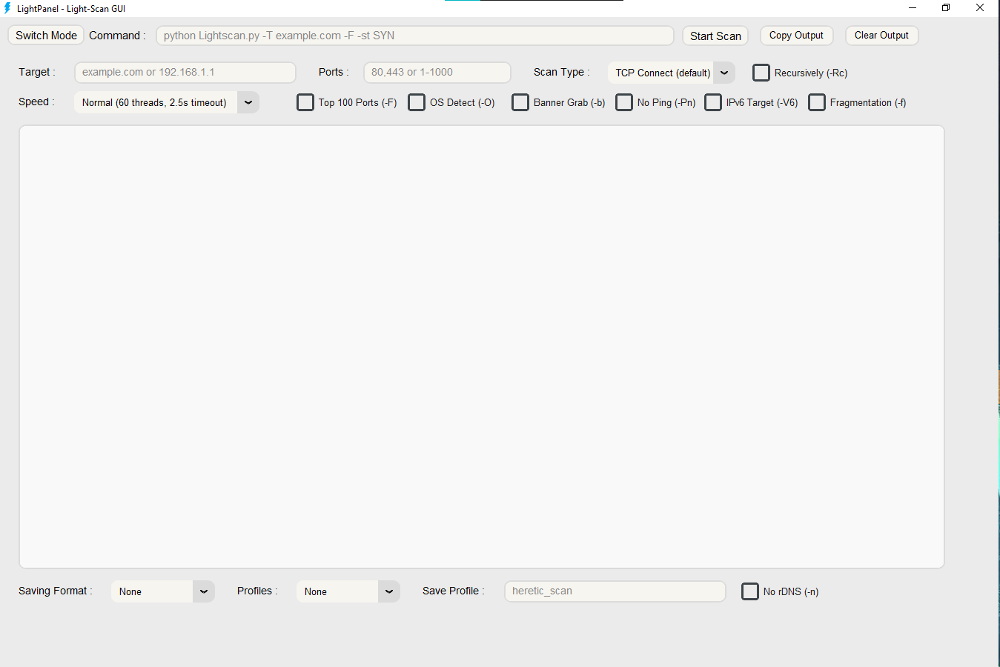
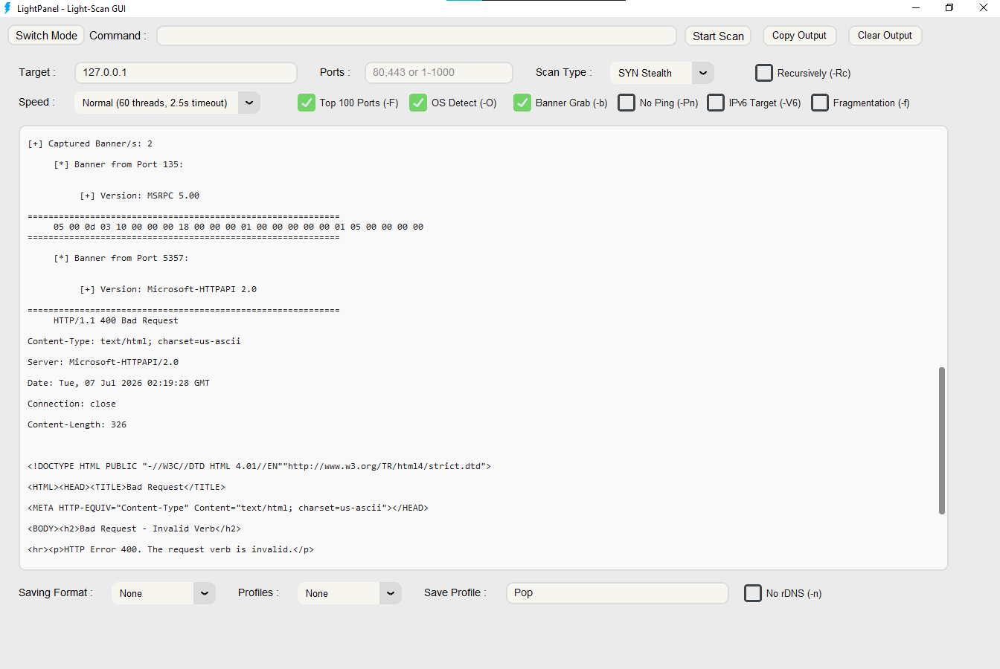

LightPanel
Light-Scan GUI v1.0.2
LightPanel
Light-Scan GUI v1.0.2
Overview
LightPanel is a complete graphical user interface for Lightscan. It provides a visual alternative to the command-line, making the toolkit accessible to users who prefer a point-and-click experience without sacrificing functionality.
🖥️ Key Features
- Complete graphical interface for Lightscan
- Integrated LightSave functionality
- Dark theme optimized for long sessions
- Intuitive target and port specification
- Real-time scan progress
- Export results with one click
⚡ Platform Support
- Windows — 7, 10, 11, Server
- Linux — Ubuntu, Debian, Arch, RHEL, Fedora, SUSE, Alpine
- macOS — 10.15+
- BSD — FreeBSD, OpenBSD, NetBSD
- Solaris — Solaris 11, Illumos
Interface Preview
LightPanel provides a clean, intuitive interface for all Lightscan functionality. Below is a visual representation of the main window.


Features
🎯 Target Management
- Single IP or hostname
- CIDR notation (/8, /16, /24)
- Octet ranges (192.168.1.0-100)
- Multiple targets (comma-separated)
- IPv6 support
🔍 Scan Configuration
- 14 scan types
- 6 speed presets
- Custom thread count
- Custom timeout
- Top 100 ports toggle
- OS detection & banner grabbing
💾 Export & Profiles
- 8 export formats
- One-click saving
- Profile management
- Save/load profiles
- Integrated LightSave
Usage
Launching LightPanel
Basic Workflow
Step 1: Enter Target
Enter an IP address, hostname, or CIDR range in the Target field.
Step 2: Configure Ports
Enter ports as a single port, range (1-1000), or list (22,80,443).
Step 3: Select Scan Type
Choose from 14 scan types. TCP Connect is the default.
Step 4: Set Speed
Select from 6 presets or manually adjust threads and timeout.
Step 5: Enable Options
Toggle OS detection, banner grabbing, no ping, IPv6, fragmentation, and more.
Step 6: Export Results
Choose an export format and click Scan — results are saved automatically.
Integration
With LightSave
LightPanel includes integrated LightSave functionality. Results can be exported in 8 formats with one click.
With Profiles
Save and load scan profiles directly from the interface. Profiles are stored in the Profiles/ directory as JSON files.
Troubleshooting
❌ "LightPanel not found"
Make sure you're in the Light-Scan directory and the virtual environment is activated.
❌ "GUI not rendering correctly"
Ensure all dependencies are installed. Run pip install -r requirements.txt.
❌ "Scan not starting"
Verify the target is valid and the interface has proper permissions.
Quick Reference
| Action | GUI Element |
|---|---|
| Set target | Target input field |
| Set ports | Ports input field |
| Choose scan type | Scan Type dropdown |
| Set speed | Speed dropdown |
| Enable OS detection | OS Detect (-O) checkbox |
| Enable banner grab | Banner Grab (-b) checkbox |
| Export results | Saving Format dropdown |
| Load profile | Profiles dropdown |
| Save profile | Save Profile input |
| Start scan | Scan button |
LightPanel v1.0.2 • Light-Scan v1.1.8 • Open Source • GPLv2 License